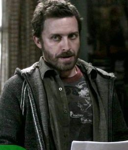

Chuck Shurley é um personagem enigmático e recorrente em *Supernatural*. Inicialmente apresentado como um escritor recluso, ele é o autor da série de livros intitulada "Supernatural", que narra com exatidão as aventuras de Sam e Dean Winchester — antes mesmo que elas aconteçam.
Considerado por muitos como um profeta, Chuck tem visões detalhadas do que está por vir e escreve cada acontecimento com precisão impressionante. Ao longo da série, sua figura vai ganhando importância, com atitudes que variam entre humor excêntrico, comportamento enigmático e momentos de grande emoção. Ele guarda segredos profundos, sendo muito mais do que aparenta à primeira vista.
Chuck Shurley
História de Origem
Habilidades e Poderes
- Visões do futuro (habilidade profética)
- Conexão sobrenatural com os acontecimentos da série
- Conhecimento detalhado sobre anjos, demônios e criaturas celestiais
- Capacidade de desaparecer misteriosamente
- Aura de mistério e influência incomum sobre o mundo espiritual
Relações
- Sam e Dean Winchester - principais protagonistas de suas visões e livros
- Castiel - vê Chuck com respeito e suspeita ao mesmo tempo
- Profetas - está ligado à linhagem profética que comunica a vontade celestial
- Mundo sobrenatural - parece conhecer mais do que diz, sendo um observador importante